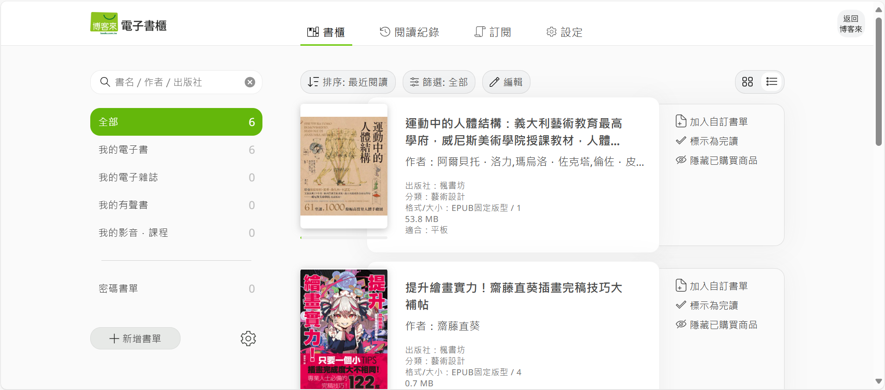
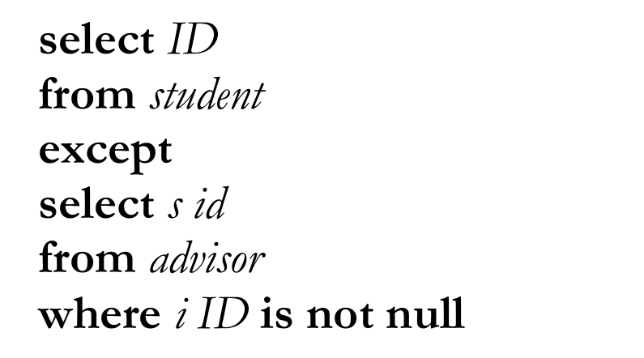

Answer all of the following: Prepare your answers in presentation format and be ready to present in class
1. Look up websites containing the following data representations:
(a) Using JSON
One example of a website that uses JSON is the Gmail web interface. JSON helps structure data in a lightweight and readable format for smooth display and interaction.
When users access their Gmail inbox through the browser, the webpage dynamically loads email data, which is likely fetched in JSON format from Google’s servers. Based on the interface, the following elements are good examples of JSON-based data:
Sender name (e.g., “Bank of America”, “Chase”, “Coast Hotels”)
Email preview/snippet (a short preview of the email body)
Timestamp (e.g., “March 26”, “12:38 PM”)
Labels and folders (like “Inbox”, “Important”, “Starred”, and custom labels)
Unread count (e.g., “Inbox (4,985)” and “Unread (18 new)”)
All this information can be efficiently structured and transferred using JSON objects.
In summary, Gmail’s interface is a good example of how websites use JSON to load and present dynamic content like email messages.
(b) Using XML

One example of a website that uses XML is the Books.com.tw eBook reader interface. XML provides a structured and standardized format that allows digital content to be organized, described, and displayed accurately.
When users open their eBook library on the platform, each eBook is stored in the EPUB format, which is essentially a ZIP archive that contains several XML-based files. These XML files define the book’s metadata, structure, and content.
Based on the interface, the following elements are good examples of XML-based data:
Book title (e.g., “提升繪畫實力！齋藤直葵插畫完稿技巧大補帖”)
Author name (e.g., “齋藤直葵”)
Publisher (e.g., “楓書坊”)
Category: (e.g., “藝術設計”)
File format and size (e.g., “EPUB Fixed Layout / 0.7 MB”)
Reading compatibility (e.g., “Tablet only”)
In summary, the Books.com.tw eBook system is a practical example of how XML is used behind the scenes to structure digital book content, allowing eBook readers to display information in an organized and consistent way.
Analyze the websites in terms of structure and composition. Name the technology/methods use for creating the web database.
2. SQL exercise:
i Express the following query in SQL using no subqueries and no set operations. (Hint: left outer join)

file.exists("sql.db")
[1] TRUE
library(DBI)
Warning: package 'DBI' was built under R version 4.4.3
library(RSQLite)
Warning: package 'RSQLite' was built under R version 4.4.2
# Establishing a SQLite Connectionconn <-dbConnect(SQLite(), "sql.db")# Set Quarto to use this SQL connectionknitr::opts_chunk$set(connection = conn)
The result shows the student IDs that appear in the student table but not in the advisor table (i.e., the students who do not have an advisor).
Then, rewrite using LEFT OUTER JOIN.
select s.IDfrom student sleftjoin advisor a on s.ID= a.s_idwhere a.s_id isnull;
4 records
ID
19991
54321
55739
70557
ii Using the university schema, write an SQL query to find the names and IDs of those instructors who teach every course taught in his or her department (i.e., every course that appears in the course relation with the instructor’s department name). Order result by name.